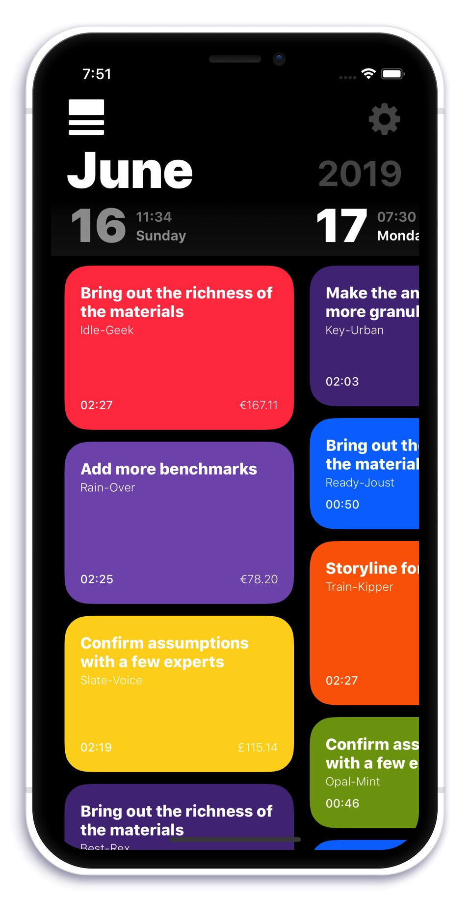

A straightforward and frictionless time tracker
that is fun to use and handles the chores for you

Pick your theme:
⛱️ Sun Bath
🧸 Toy Chest
🎨 Paint Pot
✏️ Pencil Box
🏔️ Chalk Hill
😷 Fine Dust
⛏️ Coal Mine
🌝 Light Mode
Busydays is:
☝️ Succinct
Your day at a glance. Fill it up with colorful chunks. Longer task. Larger chunk. Colors differ by client.
🐭 Frictionless
Simply start or stop your timer. Enter additional data whenever convenient or desired.
📡 Ubiquitous
Syncs between all your iOS devices. Also maintains an always up to date timesheet folder on your iCloud drive.
🌻 Friendly
Busydays makes time tracking a pleasant experience. No dreadful lists. Also: Emojis and dark mode!
Busydays makes it easy to:
👩🔧 Organize
All your time tracking records can be assigned to clients and projects. This step is optional but unlocks more administration options.
💵 Bill
Open your iCloud folder, go to the "Busydays" folder and pick the table you need. No additional steps required! Of course you can always export data from the app manually if you so desire.
📦 Backup
It's actually already been taken care of for you! Your data lives in iCloud®. So you can even delete and reinstall the app and everything reappears magically. You've got all the tables on your iCloud® drive on top of that of course.
🗝️ Stay Private
Your data never leaves Apple's® servers. Busydays only uses Apple's iCloud® infrastructure to synchronize records between your devices and to export timesheets to your iCloud Drive®.
Busydays features in technical terms:
📄 CSV Export
All your records may be exported as CSV files. This means they can be read by pretty much any spreadsheet application like Numbers® or Excel®.
📺 Display Modes
You get light mode, dark mode and something in between. In case you can't really decide.
🚂 Sync
Data always matches up on all your devices.
☁️ iCloudDrive®
CSV's are automatically beeing exported to your cloud drive. From there they are accessible from any of your iOS or macOS devices.
🔔 Notifications
The apps icon is beeing badged in case a timer is running.
⏳ Restore
Lost phone? Deleted app? No biggie. Reinstall Busydays to a device with a logged in iCloud® accout and all your data is back.
🎰 Push
Data is beeing synced in the background. No need to even open the app. All your records are always up to date.
⛰️ Offline Mode
Bad internet connection? No problem. Busydays sends it's data whenever possible. Manipulating items is always super fluent and immediate.